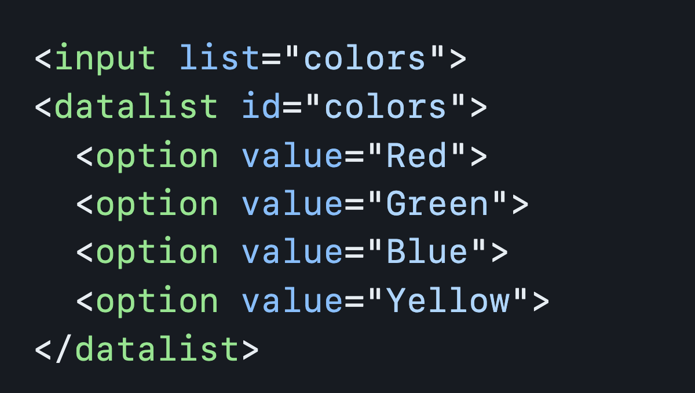

Met meer dan 20 jaar ervaring in het bouwen van websites, een rol in het Electron Governance Team en het creëren van een browser voor Polypane, heeft Kilian Valkhof een schat aan kennis op het gebied van webontwikkeling. Zijn inzichten zijn waardevol voor iedereen die betrokken is bij het maken van digitale ervaringen.
Wat is Polypane?
Met Polypane kunnen gebruikers responsieve websites maken en testen, omdat het de mogelijkheid biedt om de site tegelijkertijd op verschillende schermformaten en apparaten te bekijken. Dit is vooral handig voor het optimaliseren van de gebruikerservaring op verschillende apparaten, zoals desktops, tablets en smartphones. Een van de unieke kenmerken van Polypane is de ingebouwde ondersteuning voor verschillende webtechnologieën en -standaarden, waardoor ontwikkelaars gemakkelijk kunnen werken met moderne tools en frameworks. Bovendien biedt het krachtige hulpmiddelen voor het analyseren van prestaties en toegankelijkheid, waardoor ontwikkelaars de kwaliteit van hun websites kunnen verbeteren.
Mijn eigen website

Een van de kernpunten die Valkhof naar voren brengt, is dat browsermakers luisteren naar de behoeften van ontwikkelaars en functionaliteiten implementeren die voorheen handmatig werden gebouwd. Moderne browsers kunnen nu veel van de taken uitvoeren die voorheen werden toegeschreven aan JavaScript, maar dan sneller en toegankelijker. Valkhof benadrukt het belang van het hergebruiken van code en het verminderen van onderzoekstijd voor webontwikkelaars. Hij moedigt aan om bij het bouwen van nieuwe functionaliteiten eerst te onderzoeken of er al een ingebouwde oplossing beschikbaar is in plaats van te vertrouwen op JavaScript.
De Regel van Minste Kracht: Kies de Minst Krachtige Taal
In zijn betoog benadrukt Valkhof het belang van het toepassen van het basisprincipe van "de regel van minste kracht" bij het bouwen van webtechnologieën. Dit principe adviseert om de minst krachtige taal te kiezen die geschikt is voor een bepaald doel. Hij stelt dat JavaScript, hoewel krachtig, ook kwetsbaar en delicaat is. Door duidelijke HTML te schrijven, kunnen veel functionaliteiten worden bereikt zonder de noodzaak van JavaScript.
Browsermakers Luisteren en Implementeren
Een van de kernpunten die Valkhof naar voren brengt, is dat browsermakers luisteren naar de behoeften van ontwikkelaars en functionaliteiten implementeren die voorheen handmatig werden gebouwd. Moderne browsers kunnen nu veel van de taken uitvoeren die voorheen werden toegeschreven aan JavaScript, maar dan sneller en toegankelijker.
Efficiënt Hergebruik van Code
Valkhof benadrukt het belang van het hergebruiken van code en het verminderen van onderzoekstijd voor webontwikkelaars. Hij moedigt aan om bij het bouwen van nieuwe functionaliteiten eerst te onderzoeken of er al een ingebouwde oplossing beschikbaar is in plaats van te vertrouwen op JavaScript.
Custom Toggles (Switches)

Een voorbeeld dat Valkhof aanhaalt, is het gebruik van custom toggles, ook bekend als switches. Voorheen werden deze vaak geïmplementeerd met JavaScript, maar nu kunnen ze efficiënt worden gemaakt met behulp van pure HTML en CSS. Met behulp van de `::before` en `::after` pseudo-elementen en CSS-stijlen kan de toggle-switch worden gestileerd en aangepast aan de gebruikersinteractie.
Datalist
Een ander voorbeeld dat Valkhof aanhaalt, is het gebruik van datalists, waarmee verschillende opties kunnen worden weergegeven binnen een inputelement. Dit kan nuttig zijn voor functionaliteiten zoals een kleurenkiezer, waarbij de browser meer opties biedt met minder code dan wanneer JavaScript zou worden gebruikt. Door simpelweg een datalist toe te voegen met opties, kan de gebruiker kleuren selecteren zonder dat JavaScript nodig is voor de interactie.
In-page Transitions
In-page transitions kunnen worden gebruikt om soepele overgangen te creëren wanneer een gebruiker door een pagina scrolt. Dit kan worden bereikt met behulp van de `scroll-behavior` CSS-eigenschap.Hierdoor scrollt de pagina soepel naar de gewenste positie, wat een verbeterde gebruikerservaring oplevert zonder dat JavaScript nodig is.
Web.dev

In zijn betoog benadrukt Valkhof het cruciale belang van bronnen zoals web.dev in het moderne landschap van webontwikkeling. Web.dev biedt een schat aan waardevolle informatie, waaronder uitgebreide documentatie, praktische handleidingen en actuele richtlijnen voor het bouwen van moderne websites en applicaties. Het platform fungeert als een kompas voor ontwikkelaars, die hier toegang hebben tot een breed scala aan onderwerpen, variërend van basisprincipes tot geavanceerde technieken. Of je nu nieuw bent in de wereld van webontwikkeling of een doorgewinterde professional, web.dev biedt een rijke leeromgeving die zich voortdurend aanpast aan de evoluerende behoeften van de industrie. Door gebruik te maken van de inhoud van web.dev kunnen ontwikkelaars hun kennis uitbreiden en hun vaardigheden verfijnen op gebieden zoals HTML, CSS, JavaScript, performance-optimalisatie, toegankelijkheid en nog veel meer. Dit stelt hen in staat om efficiënter te werken en hoogwaardige webervaringen te leveren die voldoen aan de nieuwste standaarden en best practices. Bovendien biedt web.dev niet alleen theoretische kennis, maar ook praktische inzichten en voorbeelden die ontwikkelaars kunnen helpen bij het oplossen van specifieke problemen en uitdagingen waarmee ze worden geconfronteerd tijdens het ontwikkelingsproces.
Met zijn diepgaande inzichten en praktische voorbeelden biedt Valkhof waardevolle inzichten voor webontwikkelaars die streven naar efficiëntere en beter presterende webervaringen. Zijn betoog vormt een uitnodiging om de grenzen van traditionele benaderingen te verleggen en nieuwe mogelijkheden te verkennen binnen de rijke wereld van HTML en CSS.
Reflectie
Persoonlijk ben ik blij dat we steeds minder afhankelijk worden van JavaScript. Niet dat ik JavaScript niet waardeer, maar logica is niet mijn sterkste punt. De opkomst van selectors zoals selectlist en custom toggles maakt het voor mij als ontwerper veel eenvoudiger om een overzicht te behouden van de beschikbare functionaliteiten. Ik ben van plan hiervan zeker gebruik te maken. Toch blijf ik het belangrijk vinden om JavaScript goed te beheersen. Naar mijn gevoel is het nog steeds krachtiger dan CSS en biedt het extra functionaliteit.
Minor Doel
De minor Web Design & Development biedt een uitgebreid programma waarin ik interactieve toepassingen leer maken met HTML, CSS en JavaScript. Door middel van verschillende vakken en projecten wordt mijn kennis verbreed en verdiept op het gebied van webontwikkeling. Ik leer niet alleen over browsers, performance en usability, maar ook over documenteren, versiebeheer, debuggen, testen, responsiviteit, het gebruik van API's en meer.
Deze minor is geschikt voor mij, aangezien ik leergierig en gedreven ben, en affiniteit heb met techniek. Ik wil excelleren in het creëren van interactieve webapplicaties.Het lesprogramma is gericht op het behalen van verschillende leerdoelen, zoals het ontwerpen en verbeteren van interfaces, het gebruik van nieuwe webtechnologieën, het opzetten en uitvoeren van projecten waarin ontwerp en ontwikkeling samenkomen, en het realiseren van websites die toegankelijk zijn op elk apparaat en voor alle gebruikers. Met vakken zoals "Web App from Scratch", "CSS to the Rescue", "Browser Technologies", "Human Centred Design" en "API", krijg ik een uitgebreide training in het ontwerpen en bouwen van webapplicaties. Daarnaast zijn er wekelijkse presentaties en gastcolleges om mijn kennis te verbreden en contacten te leggen in het werkveld.
Het hoogtepunt van de minor is de Meesterproef, waarin ik de opgedane kennis en vaardigheden toepas om een echte oplossing te ontwerpen voor een opdrachtgever. Hierbij werk ik aan het ontwikkelen van een website die aan alle eisen voldoet en waar ik trots op kan zijn. Door het volgen van deze minor hoop ik mijn webdevelopment skills te verbeteren, met name op het gebied van werken met data en API's. Ik ben enthousiast om meer te leren over webtechnologieën en om mijn kennis van JavaScript te verdiepen voor de front-end. Ik voel me nu al thuis op deze minor en kijk uit naar het verdere programma waarin ik mijn vaardigheden verder kan ontwikkelen.